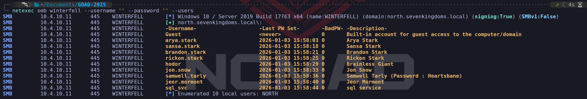

During the initial enumeration phase, when we have no credentials, our main objective is to build a map of the Active Directory environment from the outside. We act as an unauthenticated user, probing for any information that the network might give away freely due to default settings or misconfigurations. Our goal is to discover the domain name, identify the domain controllers, and gather a list of valid usernames and computer accounts.
We heavily rely on querying the Domain Name System to find critical service records that point us directly to the domain controllers, just as we did previously. We also attempt to connect to services like LDAP and SMB anonymously. If the domain is not properly secured, an anonymous LDAP bind might allow us to dump a significant amount of data about users, groups, and policies. Similarly, an SMB null session could let us list usernames and other system details.
The intelligence we gather from these methods is crucial. We use this information to select our targets and launch more direct attacks, like password spraying a list of discovered usernames or attempting an AS-REP roasting attack against users who do not require Kerberos preauthentication. This entire phase is about reconnaissance and intelligence gathering, allowing us to find the path of least resistance to gain that first critical foothold on the network.
Enumerate Null Sessions
We execute Null Session enumeration by exploiting a legacy feature in Windows that allows for anonymous connections to a special network share called IPC$, which stands for Inter-Process Communication. We essentially approach a server and establish a connection without providing any username or password. This is possible when the target system's security policies are configured to permit this type of anonymous access, a setting which is unfortunately common in older or misconfigured environments.
Once we have this unauthenticated session, we use it as a channel to query various remote services, most notably the Security Account Manager Remote (SAMR) protocol. This allows us to ask the server for detailed information as if we were a trusted machine. We can request and often receive complete lists of domain users, local and global groups, and machine accounts.
The value of this technique is immense during our initial reconnaissance. A successful Null Session enumeration hands us a validated list of usernames, which is the first half of the puzzle for credential-based attacks. It transforms our attack from blind guessing into a highly targeted operation, significantly increasing our chances of gaining an initial foothold.
nxc smb 10.10.10.161 -u '' -p ''
nxc smb 10.10.10.161 -u '' -p '' --shares
nxc smb 10.10.10.161 -u '' -p '' --pass-pol
nxc smb 10.10.10.161 -u '' -p '' --users
nxc smb 10.10.10.161 -u '' -p '' --groupsnetexec smb winterfell --username '' --password ''
netexec smb kingslanding --username '' --password ''
netexec smb meereen --username '' --password ''

Domain Controller Winterfell users enumeration.
netexec smb winterfell --username '' --password '' --users

If we take a closer look, we will see that user samwell.tarly has his password in his own description. Now that we have also discovered that we can get the list of users from inside the Null Session, we can also use the flag --users-export to automatically export all theses users into a file.
netexec smb winterfell --username '' --password '' --users --users-export users.txt

Retrieve Domain Controller Password Policy.
netexec smb winterfell --username '' --password '' --pass-pol

We were allowed to get all this information because DC Winterfell allows anonymous connection. As it's possible to see above, while enumerating all 3 DCs, we were able to get the retired the password policy for Domain Controller Winterfell and we were able to enumerate users as well.
Domain: north.sevenkingdoms.local
User: samwell.tarly
Pass: Heartsbane